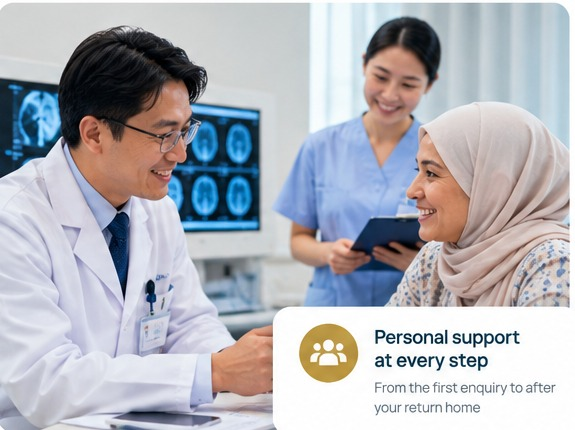

About Us
Your bridge to medical treatment in China, with coordination from Dubai before travel, during treatment and after you return home.
Your bridge to China’s leading medical providers
TAREEK AL BAHAR TOURS LLC supports international patients seeking treatment in China. We coordinate appointments, specialist referrals, translation and practical travel support so patients and families can focus on care.

Support before, during and after treatment
Practical coordination throughout the medical journey, from preparing records to returning home.
Before Travel
Medical record review, hospital coordination, appointment planning, visa guidance, transport and accommodation support.
During Treatment
Case coordination, interpretation assistance, appointment support and communication with the medical team.
After Treatment
Discharge coordination, return travel support and assistance with planned medical follow-up.
Start your medical journey in China
Send your medical reports and our team will help coordinate the next steps.